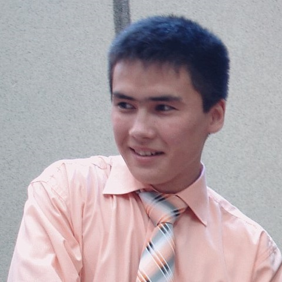
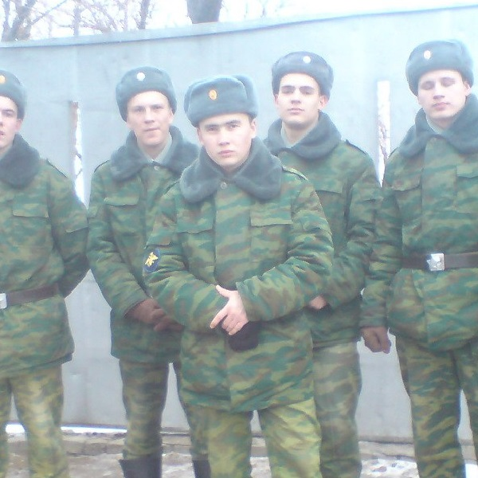
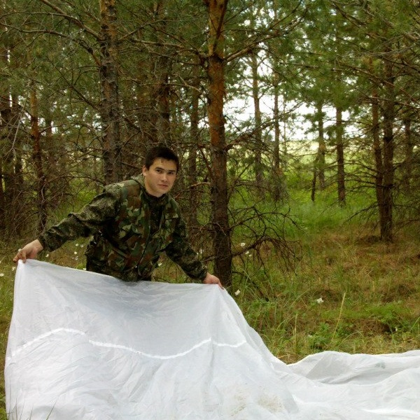
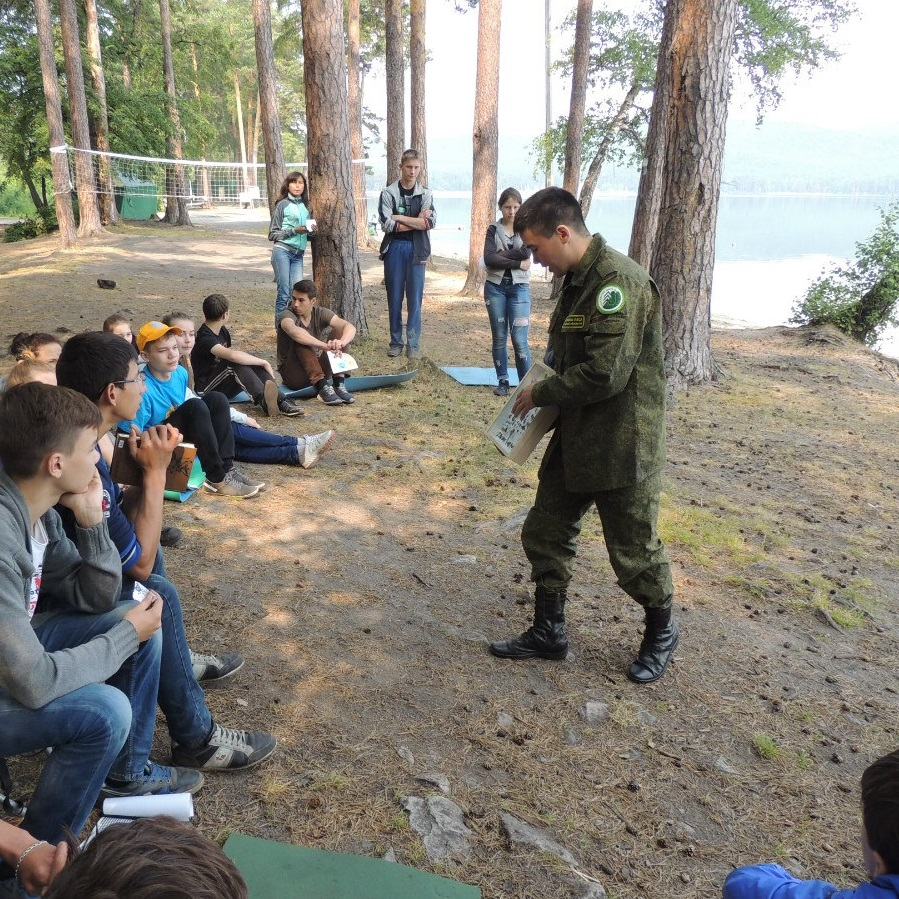

Страница обо мне
Образование
| 2015-2017 | Специальность: государственное и муниципальное управление Факультет Управления Форма обучения: заочная ЧелГУ |
| 2003-2008 | Специальность: биоэкология Биологический факультет Форма обучения: очная ЧелГУ |
| 1996-2008 | Школа №1 г.Челябинска |
Опыт работы
| Февраль 2018 — настоящее время | ЧОБУ "Красноармейское лесничество", Челябинск инженер по лесовосстановлению
|
| Апрель 2012 — январь 2018 | ФБУ "Российский центр защиты леса" - "Центр защиты леса Челябинской области", Челябинск инженер информационно-аналитического отдела
|
Биография
Я родился 30 августа 1986 года в г. Челябинске. В возрасте шести лет отправился учиться в школу №43 г.Челябинска. После 3 класса и отличной успеваемости преподавательский состав школы порекомендовал родителям, чтобы они нашли мне школу, более соответствующую моим способностям. С пятого по одиннадцатый класс я учился в школе №1 г. Челябинска. Тогда она называлась лингво-гуманитарной гимназией №1, впрочем, уже в шестом или седьмом классе на стене школы появилась табличка с надписью «Secondary school №1».
Хоть я и учился хорошо и даже участвовал в олимпиадах по английскому языку (особых лавров в которых не снискал), моим настоящим увлечением стали естественные науки, особенно биология. В десятом классе я выиграл районную и городскую олимпиады, а на областной занял четвертое место. Вторым языком для изучения в школе я выбрал французский.
После школы я сдал ЕГЭ и подал документы на биологический факультет ЧелГУ. Учился хорошо, по большинству профильных предметов была оценка «отлично». Принимал активное участие в жизни факультета, был в составе сборных команд факультета по футболу и нескольких легкоатлетических дисциплин, занимался кикбоксингом.
После окончания университета поступил на срочную службу в Космические войска ВС РФ. Демобилизовался в декабре 2009 года, в 2010-2011 годах работал неофициально в подрядной организации, занимающейся строительством. Также самостоятельно брал небольшие строительные заказы.
В 2012 году устроился в филиал ФБУ "Российский центр защиты леса" - "Центр защиты леса Челябинской области" на должность инженера информационно-аналитического отдела. Занимался осуществлением государственного лесопатологического мониторинга, ведением отчетности по защите леса и участвовал в составлении обзоров санитарного и лесопатологического состояния лесов. Также занимался ведением страницы организации на сайте rcfh.ru, а также организацией работы со СМИ и смежными организациями. Принимал участие в работе Всероссийской конференции по защите лесов в 2013 году.
В 2015 году поступил на заочное отделение Челябинского государственного университета на факультет управления. В 2017 году защитил диплом с отличием по специальности "Государственное и муниципальное управление"
В 2016 и 2017 годах совмещал работу в Центре защиты леса с работой в Областном центре дополнительного образования детей, принял участие в работе нескольких образовательных форумов для детей.
В 2018 году перешел на работу в ЧОБУ «Красноармейское лесничество» на должность инженера по лесовосстановлению, где занимаюсь организацией и координацией комплекса работ по лесовосстановлению, а также организацией и координацией работы лесного питомника ЧОБУ "Красноармейское лесничество".
Также занимаюсь выполнением небольших заказов по проведению обработки различных объектов от клещей и других насекомых, садовых ввредителей и от нежелательной растительности
Уделяю много времени на совершенствование себя как специалиста во всех проектах, в которых принимаю участие. Много читаю, в том числе профессиональную литературу и не останавливаюсь на достигнутых результатах